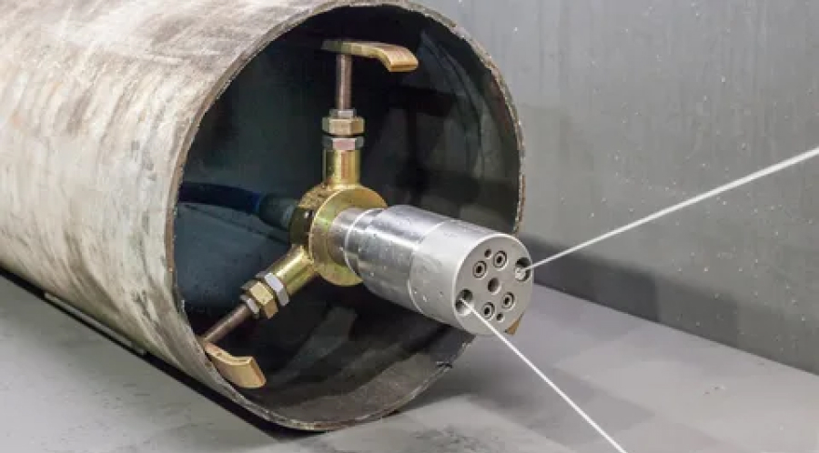

Чистка труб и трубопроводов
Использовать технологию водоструйной промывки труб можно для удаления загрязнений, наростов, плотных и воскообразных засоров в разных отраслях промышленности и коммунального хозяйства. Методика многократно проверена на практике и зарекомендовала себя на практике как экономически и технологически выгодная альтернатива механическим и абразивным способам.

Применить установку гидроструйной очистки труб можно для решения следующих задач:
- Удаление промышленных загрязнений в технологических трубах, трубных пучках реакторов и теплообменников — плотных солевых отложений, накипи, слизистых пробок и слоистых загрязнений биологического происхождения, воскообразных слоев до полного очищения поверхности;
- Удаление солевых отложений и накипи любой толщины и плотности в технологических, циркуляционных и транспортных трубопроводах на промышленном предприятии;
- Очистка транспортных трубопроводов и узлов распределения потоков (задвижек) на производстве цемента и ЖБИ, элеваторах, сушильных и сортировочных установках;
- Прочистка дымогарных, жаровых и водогрейных труб в составе котлов, теплообменников, реакторов, градирен;
- Промывка труб в коммунальном хозяйстве — расширение просвета и смыв ржавчины с водопроводов старой конструкции, очистка теплотрасс от накипи и солей, промывка канализации с удалением слизи, жировых пробок в просветах любого диаметра;
- Пробой пробок и плотных засоров в промышленных трубопроводах, ректорах, котлах, расширение просвета до проектной проходимости;
- Оперативная и экстренная промывка плотно засоренной канализации с размывом жировых камней, снятием слизи и наслоением со стенок труб большого диаметра для расширения просвета;
- Полное раскрытие технологического и транспортного просвета трубопроводов;
- Чистка и мойка труб большого диаметра — ливневки, канализационных тоннелей и коллекторов, технологических проходов под плотинами и дамбами, водостоков без нахождения людей в зоне работ.
Рабочая головка установки способна пробивать засоры труб и снимать наслоения любой плотности потоком воды. Для обеспечения безопасности давление струи подбирается в зависимости от типа труб и загрязнений, при этом отсутствует риск повреждения трубы, соединений, арматуры и запорных устройств. В зависимости от диаметра прохода подбирается вариант расположения головки относительно поверхности.
Технологические преимущества метода водоструйной очистки
В отличие от механических методов и гидроабразивной методики, водоструйная чистка труб имеет ряд положительных особенностей.
- Отсутствие механического контакта инструмента с поверхностью. Водяная струя под давлением работает как резак или дробящий наслоения инструмент, но не повреждает поверхность металла. Не повреждаются элементы изоляции, внутреннего оборудования, стыки. При отсутствии царапин и качественном смыве новые отложения возникают в меньшем темпе и объеме.
- Полный захват поверхности с рельефом. При прохождении рабочей головы по трубе, струи воды подаются в нескольких направлениях. При этом достигается эффект полного смыва — в местах поворотов, сварных и фланцевых соединений, присоединения арматуры с выступами не остается участков, куда не попадает вода. Механическая чистка не дает такого эффекта.
- Отсутствие необходимости использовать активные вещества. Для гидроструйной технологии характерно использование только не нагретой и очищенной до технического качества воды из пожарного или промышленного водопровода. На объектах с ограниченным давлением в системе, в том числе в жилых комплексах, установка может работать от собственных емкостей.
- Высокая проходимость и скорость. Вращающаяся головка установки подается в трубу на лебедке, проходит до трех поворотов трубы под прямым углом, не застревает в местах изменения диаметра прохода. В отличие от механического инструмента, гидроструйный аппарат вычищает участки со складками и неровностями поверхности.
- Безопасность. Водоструйная установка относится к безыскровой, риск возгорания остаточных газов и отложений в нефтехимических трубопроводах и канализации отсутствует. Оператор находится вне зоны работы установки, управление дистанционное при визуальном контроле. Исключается вероятность блокирования головки аппарата в трубе. Нет необходимости направлять в трубы людей с механическими инструментами, шлангами, приспособлениями.
Эффективная и быстрая чистка недоступных мест, удаленных от точек входа и ревизионных
люков частей трубопроводов.
Гидроструйные аппараты имеют высокую степень адаптивности к условиям работы. Давление
на выходе струи из сопла меняется в зависимости от типа труб и загрязнений. При
обработке труб среднего и большого диаметра используется одновременная подача
нескольких струйных потоков с вращением, что дает эффект динамической чистки. Большим
преимуществом методики считается универсальность, поскольку инструмент воздействует на
все виды отложений от твердых солевых и ржавчины до жировых, воскообразный и слизистых.
Для каждого варианта чистки выбирается определенный режим.
Возможные ограничения и технологические особенности очистки
Просвет трубы для работы установки находится в пределах 6 мм - 6 м, головки рассчитаны
на определенные диапазоны диаметров. При чистке труб диаметром 4 - 6 м подбирается
оптимальное положение рабочей части установки относительно поверхности. Следует с
осторожностью проходить участки ветхих и поврежденных коррозией труб, где есть
вероятность сквозного ржавления стенки.
Длина шланга и лебедки для прочистки составляет 140 метров. При большей длине
необходимо обеспечить доступ к участку с двух сторон.
Диапазон рабочих давлений составляет 400 - 2800 бар, например, для технологических
труб спиртозавода используется голова с давлением 1400 бар, очищающая 1 метр трубы за
1 минуту. Для прочистки канализации достаточно давления в 200 - 400 бар со средним
временем обработки 1 квадратного метра поверхности от 15 до 30 минут. Удаление смазки,
жира и масел, воскообразных отложений биологического происхождения в трубопроводе
выполняется с давлением 600 бар за 15 - 20 минут. При очистке внутренней поверхности
от ржавчины используется давление 2800 бар, время составляет примерно 15 - 20 минут на
квадратный метр. Расход остается незначительным, так как при высоком давлении
используется тонкая и плотная струя, в зависимости от характера загрязнений установка
расходует от 28 до 370 литров в минуту. На удалении 150 м от установки давление в
рукавах и головке не снижается.
Наиболее сложные воскообразные отложения и жировые (парафиновые, мастичные) наросты и
пробки удаляются полностью. Методика гидроструйной очистки особо эффективная в случаях,
когда большой диаметр трубы требует обработки значительных площадей.
По соотношению скорости, эффективности стоимости водоструйная очистка представляет
собой оптимальное и технологически оправданное решение.